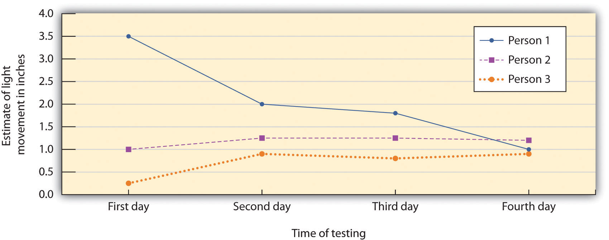

The typical outcome of social influence is that our beliefs and behaviors become more similar to those of others around us. At times this change occurs in a spontaneous and automatic sense, without any obvious intent of one person to change the other. Perhaps you learned to like jazz or rap music because your roommate was playing a lot of it. You didn’t really want to like the music, and your roommate didn’t force it on you—your preferences changed in passive way. Robert Cialdini and his colleagues (Cialdini, Reno, & Kallgren, 1990)Cialdini, R. B., Reno, R. R., & Kallgren, C. A. (1990). A focus theory of normative conduct: Recycling the concept of norms to reduce littering in public places. Journal of Personality and Social Psychology, 58, 1015–1026. found that college students were more likely to throw litter on the ground when they had just seen another person throw some paper on the ground and were least likely to litter when they had just seen another person pick up and throw paper into a trash can. The researchers interpreted this as a kind of spontaneous conformity—a tendency to follow the behavior of others, often entirely out of our awareness. Even our emotional states become more similar to those we spend more time with (Anderson, Keltner, & John, 2003).Anderson, C., Keltner, D., & John, O. P. (2003). Emotional convergence between people over time. Journal of Personality and Social Psychology, 84(5), 1054–1068.
Imitation as Subtle Conformity
Perhaps you have noticed in your own behavior a type of very subtle conformity—the tendency to imitate other people who are around you. Have you ever found yourself talking, smiling, or frowning in the same way that a friend does? Tanya Chartrand and John Bargh (1999)Chartrand, T. L., & Bargh, J. A. (1999). The chameleon effect: The perception-behavior link and social interaction. Journal of Personality and Social Psychology, 76(6), 893–910. investigated whether the tendency to imitate others would occur even for strangers, and even in very short periods of time.
In their first experiment, students worked on a task with another student, who was actually an experimental confederate. The two worked together to discuss photographs taken from current magazines. While they were working together, the confederate engaged in some unusual behaviors to see if the research participant would mimic them. Specifically, the confederate either rubbed his or her face or shook his or her foot. It turned out that the students did mimic the behavior of the confederate, by themselves either rubbing their own faces or shaking their own feet. And when the experimenters asked the participants if they had noticed anything unusual about the behavior of the other person during the experiment, none of them indicated awareness of any face rubbing or foot shaking.
It is said that imitation is a form of flattery, and we might therefore expect that we would like people who imitate us. Indeed, in a second experiment, Chartrand and Bargh found exactly this. Rather than creating the behavior to be mimicked, in this study the confederate imitated the behaviors of the participant. While the participant and the confederate discussed the magazine photos, the confederate mirrored the posture, movements, and mannerisms displayed by the participant.
As you can see in the following figure, the participants who had been mimicked liked the other person more and indicated that they thought the interaction had gone more smoothly, in comparison with the participants who had not been imitated.
Figure 7.1

Participants who had been mimicked indicated that they liked the person who had imitated them more and that the interaction with that person had gone more smoothly, in comparison with participants who had not been mimicked. Data are from Chartrand and Bargh (1999).Chartrand, T. L., & Bargh, J. A. (1999). The chameleon effect: The perception-behavior link and social interaction. Journal of Personality and Social Psychology, 76(6), 893–910.
Imitation is an important part of social interaction. We easily and frequently mimic others without being aware that we are doing so. We may communicate to others that we agree with their viewpoints by mimicking their behaviors, and we tend to get along better with people with whom we are well “coordinated.” We even expect people to mimic us in social interactions, and we become distressed when they do not (Dalton, Chartrand, & Finkel, 2010).Dalton, A. N., Chartrand, T. L., & Finkel, E. J. (2010). The schema-driven chameleon: How mimicry affects executive and self-regulatory resources. Journal of Personality and Social Psychology, 98(4), 605–617. This unconscious conformity may help explain why we hit it off immediately with some people and never get it together with others (Chartrand & Dalton, 2009; Tickle-Degnen & Rosenthal, 1990, 1992).Chartrand, T. L., & Dalton, A. N. (2009). Mimicry: Its ubiquity, importance, and functionality. In E. Morsella, J. A. Bargh, & P. M. Gollwitzer (Eds.), Oxford handbook of human action (pp. 458–483). New York, NY: Oxford University Press; Tickle-Degnen, L., & Rosenthal, R. (1990). The nature of rapport and its nonverbal correlates. Psychological Inquiry, 1(4), 285–293; Tickle-Degnen, L., & Rosenthal, R. (Eds.). (1992). Nonverbal aspects of therapeutic rapport. Hillsdale, NJ: Lawrence Erlbaum.
Although mimicry represents the more subtle side, conformity also occurs in a more active and thoughtful sense, for instance, when we actively look to our friends’ opinions to determine appropriate behavior, when a car salesperson attempts to make a sale, or even when a powerful dictator uses physical aggression to force the people in his country to engage in the behaviors that he desires. In these cases, the influence is obvious. We know we are being influenced and we may attempt—sometimes successfully, and sometimes less so—to counteract the pressure.
Influence sometimes occurs because we believe that other people have valid knowledge about an opinion or issue, and we use that information to help us make good decisions. When we take our winter coat to school because the weatherman says it’s going to be cold, this is because we think that the weatherman has some good information that we can use. Informational conformityThe change in opinions or behavior that occurs when we conform to people whom we believe have accurate information. is the change in opinions or behavior that occurs when we conform to people whom we believe have accurate information. We base our beliefs on those presented to us by reporters, scientists, doctors, and lawyers because we believe they have more expertise in certain fields than we have. But we also use our friends and colleagues for information; when we choose a prom gown on the basis of our friends’ advice about what looks good on us, we are using informational conformity—we believe that our friends have good judgment about the things that matter to us.
Informational conformity is often the end result of social comparison, the process of comparing our opinions with those of others to gain an accurate appraisal of the validity of an opinion or behavior (Festinger, Schachter, & Back, 1950; Hardin & Higgins, 1996; Turner, 1991).Festinger, L., Schachter, S., & Back, K. (1950). Social pressures in informal groups. New York, NY: Harper; Hardin, C., & Higgins, T. (1996). Shared reality: How social verification makes the subjective objective. In R. M. Sorrentino & E. T. Higgins (Eds.), Handbook of motivation and cognition: Foundations of social behavior (Vol. 3, pp. 28–84). New York, NY: Guilford; Turner, J. C. (1991). Social influence. Pacific Grove, CA: Brooks Cole. Informational conformity lead to real, long-lasting, changes in beliefs. The result of informational influence is normally private acceptanceReal change in opinions on the part of the individual.: real change in opinions on the part of the individual. We believe that taking the winter coat was the right thing to do and that the prom gown really looks good on us.
In other cases we conform not because we want to have valid knowledge but rather to meet the goal of belonging to and being accepted by a group that we care about (Deutsch & Gerard, 1955).Deutsch, M., & Gerard, H. B. (1955). A study of normative and informational social influences upon individual judgment. Journal of Abnormal and Social Psychology, 51, 629–636. When we start smoking cigarettes or buy shoes that we cannot really afford in order to impress others, we do these things not so much because we think they are the right things to do but rather because we want to be liked.
Normative conformityConformity that occurs when we express opinions or behave in ways that help us to be accepted or that keep us from being isolated or rejected by others. occurs when we express opinions or behave in ways that help us to be accepted or that keep us from being isolated or rejected by others. When we engage in normative conformity we conform to social norms—socially accepted beliefs about what we do or should do in particular social contexts (Cialdini, 1993; Sherif, 1936; Sumner, 1906).Cialdini, R. B. (1993). Influence: Science and practice (3rd ed.). New York, NY: Harper Collins; Sherif, M. (1936). The psychology of social norms. New York, NY: Harper & Row; Sumner, W. G. (1906). Folkways. Boston, MA: Ginn.
In contrast to informational conformity, in which the attitudes or opinions of the individual change to match that of the influencers, the outcome of normative conformity often represents public conformity rather than private acceptance. Public conformityA superficial change in behavior (including the public expression of opinions) that is not accompanied by an actual change in one’s private opinion. is a superficial change in behavior (including the public expression of opinions) that is not accompanied by an actual change in one’s private opinion. Conformity may appear in our public behavior even though we may believe something completely different in private. We may obey the speed limit or wear a uniform to our job (behavior) to conform to social norms and requirements, even though we may not necessarily believe that it is appropriate to do so (opinion). We may use drugs with our friends without really wanting to, and without believing it is really right, because our friends are all using drugs. However, behaviors that are originally performed out of a desire to be accepted (normative conformity) may frequently produce changes in beliefs to match them, and the result becomes private acceptance. Perhaps you know someone who started smoking to please his friends but soon convinced himself that it was an acceptable thing to do.
Although in some cases conformity may be purely informational or purely normative, in most cases the goals of being accurate and being accepted go hand-in-hand, and therefore informational and normative conformity often occur at the same time. When soldiers obey their commanding officers, they probably do it both because others are doing it (normative conformity) and because they think it is the right thing to do (informational conformity). It has been argued that the distinction between informational and normative conformity is more apparent than real and that it may not be possible to fully differentiate them (Turner, 1991).Turner, J. C. (1991). Social influence. Pacific Grove, CA: Brooks Cole.
Although conformity occurs whenever group members change their opinions or behaviors as a result of their perceptions of others, we can divide such influence into two types. Majority influenceInfluence that occurs when the beliefs held by the larger number of individuals in the current social group prevail. occurs when the beliefs held by the larger number of individuals in the current social group prevail. In contrast, minority influenceInfluence that occurs when the beliefs held by the smaller number of individuals in the current social group prevail. occurs when the beliefs held by the smaller number of individuals in the current social group prevail. Not surprisingly, majority influence is more common, and we will consider it first.
In a series of important studies on conformity, Muzafer Sherif (1936)Sherif, M. (1936). The psychology of social norms. New York, NY: Harper & Row. used a perceptual phenomenon known as the autokinetic effect to study the outcomes of conformity on the development of group norms. The autokinetic effect is caused by the rapid, small movements of our eyes that occur as we view objects and that allow us to focus on stimuli in our environment. However, when individuals are placed in a dark room that contains only a single, small, stationary pinpoint of light, these eye movements produce an unusual effect for the perceiver—they make the point of light appear to move.
Sherif took advantage of this effect to study how group norms develop in ambiguous situations. In his studies, college students were placed in a dark room with the point of light and were asked to indicate, each time the light was turned on, how much it appeared to move. Some participants first made their judgments alone. Sherif found that although each participant who was tested alone made estimates that were within a relatively narrow range (as if they had their own “individual” norm), there were wide variations in the size of these judgments among the different participants he studied.
Sherif also found that when individuals who initially had made very different estimates were then placed in groups along with one or two other individuals, and in which all the group members gave their responses on each trial aloud (each time in a different random order), the initial differences in judgments among the participants began to disappear, such that the group members eventually made very similar judgments. You can see that this pattern of change, which is shown in Figure 7.2 "Outcomes of Sherif’s Study", illustrates the fundamental principle of social influence—over time, people come more and more to share their beliefs with each other. Sherif’s study is thus a powerful example of the development of group norms.
Figure 7.2 Outcomes of Sherif’s Study
The participants in the studies by Muzafer Sherif (1936)Sherif, M. (1936). The psychology of social norms. New York, NY: Harper & Row. initially had different beliefs about the degree to which a point of light appeared to be moving. (You can see these differences as expressed on Day 1.) However, as they shared their beliefs with other group members over several days, a common group norm developed. Shown here are the estimates made by a group of three participants who met together on four different days.
Furthermore, and indicating that Sherif had created private acceptance, the new group norms continued to influence judgments when the individuals were again tested alone. The participants did not revert back to their initial opinions, even though they were quite free to do so; rather, they stayed with the new group norms. And these conformity effects appear to have occurred entirely out of the awareness of most participants. Sherif (1936, p. 108)Sherif, M. (1936). The psychology of social norms. New York, NY: Harper & Row. reported that the majority of the participants indicated after the experiment was over that their judgments had not been influenced by the judgments made by the other group members.
Sherif also found that the norms that were developed in groups could continue over time. When the original research participants were moved into groups with new people, their opinions subsequently influenced the judgments of the new group members (Jacobs & Campbell, 1961).Jacobs, R. C., & Campbell, D. T. (1961). The perpetuation of an arbitrary tradition through several generations of a laboratory microculture. Journal of Abnormal and Social Psychology, 62, 649–658. The norms persisted through several “generations” (MacNeil & Sherif, 1976)MacNeil, M. K., & Sherif, M. (1976). Norm change over subject generations as a function of arbitrariness of prescribed norms. Journal of Personality and Social Psychology, 34, 762–773. and could influence individual judgments up to a year after the individual was last tested (Rohrer, Baron, Hoffman, & Swander, 1954).Rohrer, J. H., Baron, S. H., Hoffman, E. L., & Swander, D. V. (1954). The stability of autokinetic judgments. American Journal of Psychology, 67, 143–146.
When Solomon Asch (Asch, 1952, 1955)Asch, S. E. (1952). Social psychology. Englewood Cliffs, NJ: Prentice-Hall; Asch, S. E. (1955). Opinions and social pressure. Scientific American, 11, 32. heard about Sherif’s studies, he responded in perhaps the same way that you might have: “Well of course people conformed in this situation, because after all the right answer was very unclear,” you might have thought. Since the study participants didn’t know the right answer (or indeed the “right” answer was no movement at all), it is perhaps not that surprising that people conformed to the beliefs of others.
Asch conducted studies in which, in complete contrast to the autokinetic effect experiments of Sherif, the correct answers to the judgments were entirely unambiguous. In these studies, the research participants were male college students who were told that they were to be participating in a test of visual abilities. The men were seated in a small semicircle in front of a board that displayed the visual stimuli that they were going to judge. The men were told that there would be 18 trials during the experiment, and on each trial they would see two cards. The standard card had a single line that was to be judged. And the test card had three lines that varied in length between about 2 and 10 inches:

The men’s task was simply to indicate which line on the test card was the same length as the line on the standard card. As you can see from the Asch card sample above, there is no question that correct answer is line 1. In fact, Asch found that people made virtually no errors on the task when they made their judgments alone.
On each trial, the each person answered out loud, beginning with one end of the semicircle and moving to the other end. Although the participant did not know it, the other group members were not true participants but experimental confederates who gave predetermined answers on each trial. Because the participant was seated next to last in the row, he always made his judgment after most of the other group members made theirs. Although on the first two trials the confederates each gave the correct answer, on the third trial, and on 11 of the subsequent trials, they all had been instructed to give the same incorrect answer. For instance, even though the correct answer was Line 1, they would all say it was Line 2. Thus when it became the participant’s turn to answer, he could either give the clearly correct answer or conform to the incorrect responses of the confederates.
Asch found that about 76% of the 123 men who were tested gave at least one incorrect response when it was their turn, and 37% of the responses, overall, were conforming. This is indeed evidence for the power of conformity because the research participants were giving clearly incorrect answers out loud. However, conformity was not absolute—in addition to the 24% of the men who never conformed, only 5% of the men conformed on all 12 of the critical trials.
Figure 7.3 Participants in the Asch Line-Judging Experiment

You might think that Asch’s study shows primarily normative conformity, in the sense that the participants gave the wrong answer not because they thought it was correct but because they wanted to avoid being seen as different. But is it not possible that the participants were also a bit unsure of the correct answer? When I look at the picture of one of the participants in Asch’s studies (see Figure 7.3 "Participants in the Asch Line-Judging Experiment"), it looks to me like he is really unsure about what he is seeing. Perhaps, then, even in Asch’s study some informational influence is occurring. Maybe the participants became unsure of their responses and used the opinions of others to help them determine what was correct. Normative and informational conformity often operate together.
The research that we have discussed to this point involves conformity in which the opinions and behaviors of individuals become more similar to the opinions and behaviors of the majority of the people in the group—majority influence. But we do not always blindly conform to the beliefs of the majority. Although more unusual, there are nevertheless cases in which a smaller number of individuals are able to influence the opinions or behaviors of the group—this is minority influence.
It is a good thing that minorities can be influential; otherwise, the world would be pretty boring. When we look back on history we find that it is the unusual, divergent, innovative minority groups or individuals, who—although frequently ridiculed at the time for their unusual ideas—end up being respected for producing positive changes. The work of scientists, religious leaders, philosophers, writers, musicians, and artists who go against group norms by expressing new and unusual ideas frequently is not liked at first. These novel thinkers may be punished—in some cases even killed—for their beliefs. In the end, however, if the ideas are interesting and important, the majority may conform to these new ideas, producing social change. In short, although conformity to majority opinions is essential to provide a smoothly working society, if individuals only conformed to others there would be few new ideas and little social change.

Galileo, Copernicus, and Martin Luther were people who did not conform to the opinions and behaviors of those around them. In the end their innovative ideas changed the thinking of the masses.
The French social psychologist Serge Moscovici was particularly interested in the situations under which minority influence might occur. In fact, he argued that all members of all groups are able, at least in some degree, to influence others, regardless of whether they are in the majority or the minority. To test whether minority group members could indeed produce influence, he and his colleagues (Moscovici, Lage, & Naffrechoux, 1969)Moscovici, S., Lage, E., & Naffrechoux, M. (1969). Influence of a consistent minority on the responses of a majority in a colour perception task. Sociometry, 32, 365–379. created the opposite of Asch’s line perception study, such that there was now a minority of confederates in the group (two) and a majority of experimental participants (four). All six individuals viewed a series of slides depicting colors, supposedly as a study of color perception, and as in Asch’s research, each voiced out loud an opinion about the color of the slide.
Although the color of the slides varied in brightness, they were all clearly blue. Moreover, demonstrating that the slides were unambiguous, just as the line judgments of Asch had been, participants who were asked to make their judgments alone called the slides a different color than blue less than 1% of the time. (When it happened, they called the slides green.)
In the experiment, the two confederates had been instructed to give one of two patterns of answers that were different from the normal responses. In the consistent-minority condition, the two confederates gave the unusual response (green) on every trial. In the inconsistent-minority condition the confederates called the slides “green” on two thirds of their responses and called them blue on the other third.
The minority of two was able to change the beliefs of the majority of four, but only when they were unanimous in their judgments. As shown in Figure 7.4 "The Power of Consistent Minorities", Moscovici found that the presence of a minority who gave consistently unusual responses influenced the judgments made by the experimental participants. When the minority was consistent, 32% of the majority group participants said green at least once and 18% of the responses of the majority group were green. However, as you can see in Figure 7.4 "The Power of Consistent Minorities", the inconsistent minority had virtually no influence on the judgments of the majority.
Figure 7.4 The Power of Consistent Minorities
In the studies of minority influence by Serge Moscovici, only a consistent minority (in which each individual gave the same incorrect response) was able to produce conformity in the majority participants. Data are from Moscovici, Lage, and Naffrechoux (1969).Moscovici, S., Lage, E., & Naffrechoux, M. (1969). Influence of a consistent minority on the responses of a majority in a colour perception task. Sociometry, 32, 365–379.
On the basis of this research, Moscovici argued that minorities could have influence over majorities, provided they gave consistent, unanimous responses. Subsequent research has found that minorities are most effective when they express consistent opinions over time and with each other, when they show that they are invested in their position by making significant personal and material sacrifices, and when they seem to be acting out of principle rather than from ulterior motives (Hogg, 2010).Hogg, M. A. (2010). Influence and leadership. In S. F. Fiske, D. T. Gilbert, & G. Lindzey (Eds.), Handbook of social psychology (Vol. 2, pp. 1166–1207). New York, NY: Wiley. Although they may want to adopt a relatively open-minded and reasonable negotiating style on issues that are less critical to the attitudes they are trying to change, successful minorities must be absolutely consistent with regard to their core arguments (Mugny & Papastamou, 1981).Mugny, G., & Papastamou, S. (1981). When rigidity does not fail: Individualization and psychologicalization as resistance to the diffusion of minority innovation. European Journal of Social Psychology, 10, 43–62.
When minorities are successful at producing influence, they are able to produce strong and lasting attitude change—true private acceptance—rather than simply public conformity. People conform to minorities because they think that they are right, and not because they think it is socially acceptable. Minorities have another, potentially even more important, outcome on the opinions of majority group members—the presence of minority groups can lead majorities to engage in fuller, as well as more divergent, innovative and creative thinking about the topics being discussed (Martin & Hewstone, 2003; Martin, Martin, Smith, & Hewstone, 2007).Martin, R., & Hewstone, M. (2003). Majority versus minority influence: When, not whether, source status instigates heuristic or systematic processing. European Journal of Social Psychology, 33(3), 313–330; Martin, R., Martin, P. Y., Smith, J. R., & Hewstone, M. (2007). Majority versus minority influence and prediction of behavioral intentions and behavior. Journal of Experimental Social Psychology, 43(5), 763–771.
Nemeth and Kwan (1987)Nemeth, C. J., & Kwan, J. L. (1987). Minority influence, divergent thinking, and the detection of correct solutions. Journal of Applied Social Psychology, 17, 788–799. had participants work in groups of four on a creativity task in which they were presented with letter strings such as tdogto and asked to indicate which word came to their mind first as they looked at the letters. The judgments were made privately, which allowed the experimenters to provide false feedback about the responses of the other group members. All participants indicated the most obvious word (in this case, dog) as their response on each of the initial trials. However, the participants were told (according to experimental condition) either that three of the other group members had also reported seeing dog and that one had reported seeing god or that three out of the four had reported seeing god whereas only one had reported dog. Participants then completed other similar word strings on their own, and their responses were studied.
Results showed that when the participants thought that the unusual response (for instance, god rather than dog) was given by a minority of one individual in the group rather than by a majority of three individuals, they subsequently answered more of the new word strings using novel solutions, such as finding words made backward or using a random order of the letters. On the other hand, the individuals who thought that the majority of the group had given the novel response did not develop more creative ideas. The idea is when the participants thought that the novel response came from a group minority (one person), they thought about the responses more carefully, in comparison with the same behaviors performed by majority group members, and this led them to adopt new and creative ways to think about the problems. This result, along with other research showing similar findings, suggests that messages that come from minority groups lead us to think more fully about the decision, which can produce innovative, creative thinking in majority group members (Crano & Chen, 1998).Crano, W. D., & Chen, X. (1998). The leniency contract and persistence of majority and minority influence. Journal of Personality and Social Psychology, 74, 1437–1450.
In summary, we can conclude that minority influence, although not as likely as majority influence, does sometimes occur. The few are able to influence the many when they are consistent and confident in their judgments but are less able to have influence when they are inconsistent or act in a less confident manner. Furthermore, although minority influence is difficult to achieve, if it does occur it is powerful. When majorities are influenced by minorities they really change their beliefs—the outcome is deeper thinking about the message, private acceptance of the message, and in some cases even more creative thinking.
The studies of Asch, Sherif, and Moscovici demonstrate the extent to which individuals—both majorities and minorities—can create conformity in others. Furthermore, these studies provide information about the characteristics of the social situation that are important in determining the extent to which we conform to others. Let’s consider some of those variables.
As the number of people in the majority increases, relative to the number of persons in the minority, pressure on the minority to conform also increases (Latané, 1981; Mullen, 1983).Latané, B. (1981). The psychology of social impact. American Psychologist, 36, 343–356; Mullen, B. (1983). Operationalizing the effect of the group on the individual: A self-attention perspective. Journal of Experimental Social Psychology, 19, 295–322. Asch conducted replications of his original line-judging study in which he varied the number of confederates (the majority subgroup members) who gave initial incorrect responses from 1 to 16 people, while holding the number in the minority subgroup constant at 1 (the single research participant). You may not be surprised to hear the results of this research: When the size of the majorities got bigger, the lone participant was more likely to give the incorrect answer.
Increases in the size of the majority increase conformity, regardless of whether the conformity is informational or normative. In terms of informational conformity, if more people express an opinion, their opinions seem more valid. Thus bigger majorities should result in more informational conformity. But larger majorities will also produce more normative conformity because being different will be harder when the majority is bigger. As the majority gets bigger, the individual giving the different opinion becomes more aware of being different, and this produces a greater need to conform to the prevailing norm.
Although increasing the size of the majority does increase conformity, this is only true up to a point. The increase in the amount of conformity that is produced by adding new members to the majority group (known as the social impactThe increase in the amount of conformity that is produced by adding new members to the majority group. of each group member) is greater for initial majority members than it is for later members (Latané, 1981).Latané, B. (1981). The psychology of social impact. American Psychologist, 36, 343–356. This pattern is shown in Figure 7.5 "Social Impact", which presents data from a well-known experiment by Stanley Milgram and his colleagues (Milgram, Bickman, & Berkowitz, 1969)Milgram, S., Bickman, L., & Berkowitz, L. (1969). Note on the drawing power of crowds of different size. Journal of Personality and Social Psychology, 13, 79–82. that studied how people are influenced by the behavior of others on the streets of New York City.
Milgram had confederates gather in groups on 42nd street in New York City, in front of the Graduate Center of the City University of New York, each looking up at a window on the sixth floor of the building. The confederates were formed into groups ranging from one to 15 people. A video camera in a room on the sixth floor above recorded the behavior of 1,424 pedestrians who passed along the sidewalk next to the groups.
As you can see in Figure 7.5 "Social Impact", larger groups of confederates increased the number of people who also stopped and looked up, but the influence of each additional confederate was generally weaker as size increased. Groups of three confederates produced more conformity than did a single person, and groups of five produced more conformity than groups of three. But after the group reached about six people, it didn’t really matter very much. Just as turning on the first light in an initially dark room makes more difference in the brightness of the room than turning on the second, third, and fourth lights does, adding more people to the majority tends to produce diminishing returns—less effect on conformity.
Figure 7.5 Social Impact

This figure shows the percentage of participants who looked up as a function of the size of the crowd on the street in Milgram’s (1969)Milgram, S., Bickman, L., & Berkowitz, L. (1969). Note on the drawing power of crowds of different size. Journal of Personality and Social Psychology, 13, 79–82. study on the streets of New York. You can see that the amount of conformity increases dramatically until there are five participants, after which it levels off. Similar patterns have been found in many other studies of conformity.
Group size is an important variable that influences a wide variety of behaviors of the individuals in groups. People leave proportionally smaller tips in restaurants as the number in their party increases, and people are less likely to help as the number of bystanders to an incident increases (Latané, 1981).Latané, B. (1981). The psychology of social impact. American Psychologist, 36, 343–356. The number of group members also has an important influence on group performance: As the size of a working group gets larger, the contributions of each individual member to the group effort become smaller. In each case, the influence of group size on behavior is found to be similar to that shown in Figure 7.5 "Social Impact".
As you can see in Figure 7.5 "Social Impact", the effect of adding new individuals to the group eventually levels off entirely, such that adding more people to the majority after that point makes no meaningful difference in the amount of conformity. This peak usually occurs when the majority has about four or five persons. One reason that the impact of new group members decreases so rapidly is because as the number in the group increases, the individuals in the majority are soon seen more as a group rather than as separate individuals. When there are only a couple of individuals expressing opinions, each person is likely to be seen as an individual, holding his or her own unique opinions, and each new individual adds to the impact. As a result, two people are more influential than one, and three more influential than two. However, as the number of individuals grows, and particularly when those individuals are perceived as being able to communicate with each other, the individuals are more likely to be seen as a group rather than as individuals. At this point, adding new members does not change the perception; regardless of whether there are four, five, six, or more members, the group is still just a group. As a result, the expressed opinions or behaviors of the group members no longer seem to reflect their own characteristics, so much as they do that of the group as a whole, and thus increasing the number of group members is less effective in increasing influence (Wilder, 1977).Wilder, D. A. (1977). Perception of groups, size of opposition, and social influence. Journal of Experimental Social Psychology, 13(3), 253–268.
Although the number of people in the group is an important determinant of conformity, it cannot be the only thing—if it were, minority influence would be impossible. It turns out that the consistency or unanimity of the group members is even more important. In Asch’s study, as an example, conformity occurred not so much because many confederates gave a wrong answer but rather because each of the confederates gave the same wrong answer. In one follow-up study that he conducted, Asch increased the number of confederates to 16 but had just one of those confederates give the correct answer. He found that in this case, even though there were 15 incorrect and only one correct answer given by the confederates, conformity was nevertheless sharply reduced—to only about 5% of the participants’ responses. And you will recall that in the minority influence research of Moscovici, the same thing occurred; conformity was only observed when the minority group members were completely consistent in their expressed opinions.
Although you might not be surprised to hear that conformity decreases when one of the group members gives the right answer, you may be more surprised to hear that conformity is reduced even when the dissenting confederate gives a different wrong answer. For example, conformity is reduced dramatically in Asch’s line-judging situation, such that virtually all participants give the correct answer (assume it is line 3 in this case) even when the majority of the confederates have indicated that line 2 is the correct answer and a single confederate indicates that line 1 is correct. In short, conformity is reduced when there is any inconsistency among the members of the majority group—even when one member of the majority gives an answer that is even more incorrect than that given by the other majority group members (Allen & Levine, 1968).Allen, V. L., & Levine, J. M. (1968). Social support, dissent and conformity. Sociometry, 31(2), 138–149.
Why should unanimity be such an important determinant of conformity? For one, when there is complete agreement among the majority members, the individual who is the target of influence stands completely alone and must be the first to break ranks by giving a different opinion. Being the only person who is different is potentially embarrassing, and people who wish to make a good impression on, or be liked by, others may naturally want to avoid this. If you can convince your friend to wear blue jeans rather than a coat and tie to a wedding, then you’re naturally going to feel a lot less conspicuous when you wear jeans too.
Second, when there is complete agreement—remember the consistent minority in the studies by Moscovici—the participant may become less sure of his or her own perceptions. Because everyone else is holding the exact same opinion, it seems that they must be correctly responding to the external reality. When such doubt occurs, the individual may be likely to conform due to informational conformity. Finally, when one or more of the other group members gives a different answer than the rest of the group (so that the unanimity of the majority group is broken), that person is no longer part of the group that is doing the influencing and becomes (along with the participant) part of the group being influenced. You can see that another way of describing the effect of unanimity is to say that as soon as the individual has someone who agrees with him or her that the others may not be correct (a supporter or ally), then the pressure to conform is reduced. Having one or more supporters who challenge the status quo validates one’s own opinion and makes disagreeing with the majority more likely (Allen, 1975; Boyanowsky & Allen, 1973).Allen, V. L. (1975). Social support for nonconformity. In L. Berkowitz (Ed.), Advances in experimental social psychology (Vol. 8). New York, NY: Academic Press; Boyanowsky, E. O., & Allen, V. L. (1973). Ingroup norms and self-identity as determinants of discriminatory behavior. Journal of Personality and Social Psychology, 25, 408–418.
Still another determinant of conformity is the perceived importance of the decision. The studies of Sherif, Asch, and Moscovici may be criticized because the decisions that the participants made—for instance, judging the length of lines or the colors of objects—seem rather trivial. But what would happen when people were asked to make an important decision? Although you might think that conformity would be less when the task becomes more important (perhaps because people would feel uncomfortable relying on the judgments of others and want to take more responsibility for their own decisions), the influence of task importance actually turns out to be more complicated than that.
How Task Importance and Confidence Influence Conformity
The joint influence of an individual’s confidence in his or her beliefs and the importance of the task was demonstrated in an experiment conducted by Baron, Vandello, and Brunsman (1996)Baron, R. S., Vandello, J. A., & Brunsman, B. (1996). The forgotten variable in conformity research: Impact of task importance on social influence. Journal of Personality and Social Psychology, 71, 915–927. that used a slight modification of the Asch procedure to assess conformity. Participants completed the experiment along with two other students, who were actually experimental confederates. The participants worked on several different types of trials, but there were 26 that were relevant to the conformity predictions. On these trials a photo of a single individual was presented first, followed immediately by a “lineup” photo of four individuals, one of whom had been viewed in the initial slide (but who might have been dressed differently):
The participants’ task was to call out which person in the lineup was the same as the original individual using a number between 1 (the person on the left) and 4 (the person on the right). In each of the critical trials the two confederates went before the participant and they each gave the same wrong response.
Two experimental manipulations were used. First, the researchers manipulated task importance by telling some participants (the high importance condition) that their performance on the task was an important measure of eyewitness ability and that the participants who performed most accurately would receive $20 at the end of the data collection. (A lottery using all the participants was actually held at the end of the semester, and some participants were paid the $20.) Participants in the low-importance condition, on the other hand, were told that the test procedure was part of a pilot study and that the decisions were not that important. Second, task difficulty was varied by showing the test and the lineup photos for 5 and 10 seconds, respectively (easy condition) or for only ½ and 1 second, respectively (difficult condition). The conformity score was defined as the number of trials in which the participant offered the same (incorrect) response as the confederates.
Figure 7.6

On easy tasks, participants conformed less when they thought that the decision was of high (versus low) importance, whereas on difficult tasks, participants conformed more when they thought the decision was of high importance. Data are from Baron et al. (1996).Baron, R. S., Vandello, J. A., & Brunsman, B. (1996). The forgotten variable in conformity research: Impact of task importance on social influence. Journal of Personality and Social Psychology, 71, 915–927.
As you can see in the preceding figure, an interaction between task difficulty and task importance was observed. On easy tasks, participants conformed less to the incorrect judgments of others when the decision had more important consequences for them. In these cases, they seemed to rely more on their own opinions (which they were convinced were correct) when it really mattered, but were more likely to go along with the opinions of the others when things were not that critical (probably normative conformity).
On the difficult tasks, however, results were the opposite. In this case participants conformed more when they thought the decision was of high, rather than low, importance. In these cases in which they were more unsure of their opinions and yet they really wanted to be correct, they used the judgments of others to inform their own views (informational conformity).